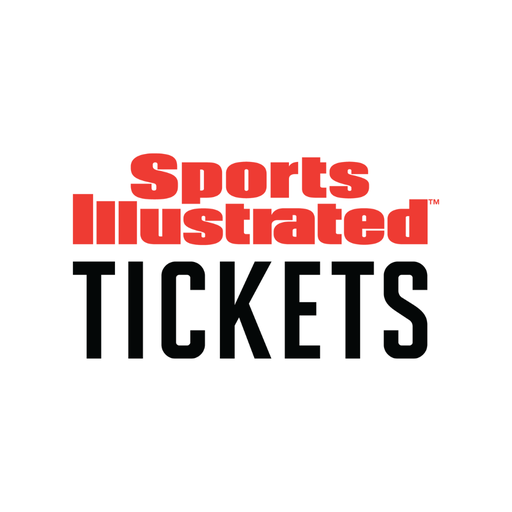
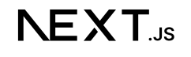

Work Term 5


Sports Illustrated Tickets
Even though I was still working under Tyger Shark this term, the entirety of my time was spent working on a development team of Sports Illustrated Tickets. Thus I am designing the work term report around SI Tickets rather than Tyger Shark.Sports Illustrated Tickets is a fairly new branch of the Sports Illustrated brand, and an up-and-coming competitor to platforms like TicketMaster. During my time there, the platform has gained lots of momentum and official sports partners including the NFL and MLB! Although it's still new, the recognizeable brand name of Sports Illustrated helped it soar straight to the competitors' level in the ticketing landscape.
| Automated Pricer - App Features |
|---|
|
At the beginning of my term, I was moved from my data role to yet another new development team. This time, I worked as a
more full-stack developer on an automated-pricing tool. This tool pulled from multiple different external sources,
including competitor pricing, weather, and past events' pricing. It would then use all of these variables, as well as
adjustments made by the person using the tool, to output an optimal price for each ticket for any given event.
|
| Automated Pricer - NextJS Development |
|
Another new aspect of my work this term was working in a NextJS framework rather than the Node.js framework I'm used to. This was a prety interesting and eye-opening approach to the client-server model that I haven't been exposed to before. It was pretty interesting that the structure of both the backend API endpoints and the frontend website paths were fully driven by the directory structure of the codebase. I found that there were both benefits and drawbacks to both approaches. On one hand, it made it much more straightforward to add new endpoints and pages, removing the need to 'register' them in a sort of central 'routes' file. But on the other hand, it made the codebase structure much more  challenging to navigate and quickly read through because there are so many layers of nested directories that it's hard to get a comprehensive mental picture of the codebase. |
| Goal #1 - Professional and Ethical Behaviour |
|---|
|
My first goal was that I would like to improve my ability to fill idle time during my day.
There were many times where I found myself in between
two tasks and unsure what I could be doing while waiting for my next one.
|
| Goal #2 - Communication |
|
This was a continuation from my communication goal of last term: |
| Goal #3 - Backend Literacy |
|
This goal was also a continuation of my backend goal of last term: |
|
In conclusion, this as a very interesting and unique last term. Even though I worked at the same plce as last term, I still had a completely distinct experience due to both working in a new NextJS framework, as well as learning the ins and outs of leveraging an AI coding agent in Claude Code. This was a great term to end on that gave me a lot of helpful insights into the technologies of the future. |
 touch-base and check in on me. Numerous times I had real and purposeful questions and suggestions to bring up.
Additionally, about halfway through the term, I was given ownership of an entire end-to-end feature flow. Thus,
naturally, the users of the playform and my feature had questions and feedback, and I would have consistent
back-and-forths with them and was not just a fly on the wall in these meetings.
touch-base and check in on me. Numerous times I had real and purposeful questions and suggestions to bring up.
Additionally, about halfway through the term, I was given ownership of an entire end-to-end feature flow. Thus,
naturally, the users of the playform and my feature had questions and feedback, and I would have consistent
back-and-forths with them and was not just a fly on the wall in these meetings.
 I want to obtain a lot of hands-on experience with writing server-side code. After my last term, I am very comfortable
working in react frontend, but a lot of backend programming is still pretty foreign to me. I would love to achieve a
more deep understanding through a great project working in the server environment (Eg. connecting to external apis,
creating complex endpoints, etc).
I want to obtain a lot of hands-on experience with writing server-side code. After my last term, I am very comfortable
working in react frontend, but a lot of backend programming is still pretty foreign to me. I would love to achieve a
more deep understanding through a great project working in the server environment (Eg. connecting to external apis,
creating complex endpoints, etc).